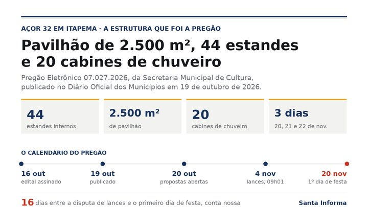

Itapema · Cultura
Itapema · CulturaOs três editais de cultura de Itapema deram 19 projetos aprovados, e a bolsa para Mestres não teve um único inscrito
A etapa anterior deste mesmo edital, com as 32 inscrições e as 12 quedas.
A Secretaria de Cultura de Itapema publicou em 23 de outubro o resultado final da etapa de habilitação do Edital 002/2026, o dos projetos culturais pagos com dinheiro federal da Aldir Blanc. Dos 18 projetos selecionados em setembro, 12 foram habilitados e 6 caíram na análise dos documentos. Os seis recursos apresentados foram todos indeferidos. Pelos valores de cada categoria, os projetos que caíram carregavam R$ 120 mil, e a convocação de suplentes publicada no mesmo dia chama duas pessoas, que somam R$ 50 mil. Sobram R$ 70 mil sem ninguém na fila, conta nossa.
Em 30 segundos · Modo de Leitura, formato original Santa Informa
O Edital 002/2026 de cultura de Itapema chegou ao fim da habilitação.
O resultado saiu no Diário Oficial dos Municípios em 23 de outubro.
Eram 18 projetos selecionados na etapa de setembro.
12 passaram na conferência dos documentos.
6 foram inabilitados, um em cada três.
Todos os 6 recursos apresentados foram indeferidos.
A categoria A, de R$ 10 mil, terminou com zero projeto.
Ela tinha um único selecionado, que não enviou a documentação.
Na categoria B, de R$ 20 mil, foram 9 habilitados e 4 inabilitados.
Na categoria C, de R$ 30 mil, foram 3 habilitados e 1 inabilitado.
Os seis que caíram levavam R$ 120 mil, conta nossa.
No mesmo dia saiu a convocação de suplentes.
A lista de suplente tem duas pessoas, e só.
Uma é da categoria B e a outra da categoria C.
Juntas elas alcançam R$ 50 mil das seis vagas.
Sobram R$ 70 mil sem suplente nenhum, conta nossa.
A categoria A não tem suplente na lista.
Os suplentes entregam documento de 26 a 28 de outubro.
A entrega é pela plataforma Mapa Cultural CIM-AMFRI.
Quem não entregar tudo no prazo também é inabilitado.
O edital diz que não cabe novo recurso depois deste resultado.
Quatro das seis quedas citam o mesmo item 9.1, inciso VI.
Em setembro, 12 dos 32 inscritos já tinham caído por papel.
Das 32 inscrições do começo, 12 seguem de pé hoje.
Isso é 37,5%, conta nossa.
Um dos que caíram tinha entrado com dinheiro remanejado da categoria A.
Os habilitados agora assinam o Termo de Execução Cultural.
O edital abriu em 19 de agosto, há 65 dias, conta nossa.
Não falamos com a Secretaria de Cultura de Itapema para esta matéria.
Poder PúblicoPublicada em Redação Santa Informa
![Ilustração com o rótulo cultura em Itapema, Edital 002/2026 da PNAB, e o título dos 18 projetos selecionados, 6 caíram na documentação, para 6 vagas há 2 suplentes. Um quadro de três linhas traz a categoria A de R$ 10 mil com 1 selecionado, 0 habilitado, 1 inabilitado e nenhum suplente; a categoria B de R$ 20 mil com 13 selecionados, 9 habilitados, 4 inabilitados e 1 suplente; e a categoria C de R$ 30 mil com 4 selecionados, 3 habilitados, 1 inabilitado e 1 suplente. A linha de total soma 18, 12, 6 e 2. No rodapé, R$ 70 mil em vermelho ao lado da frase é quanto sobra sem ninguém na fila, porque só há suplente em duas das três categorias.](imagens/webp/ilustracao-m324.webp)
A Secretaria de Cultura de Itapema publicou em 23 de outubro, no Diário Oficial dos Municípios, o resultado final da etapa de habilitação do Edital 002/2026, que paga projetos culturais da cidade com dinheiro federal da Política Nacional Aldir Blanc. Era a conferência dos documentos de quem já tinha sido selecionado. Dos 18 projetos escolhidos em setembro, 12 foram habilitados e 6 foram inabilitados. Os seis apresentaram recurso, e os seis recursos foram indeferidos. O edital diz que, depois deste resultado, não cabe mais recurso.
A categoria A, de R$ 10 mil por projeto, é a porta de entrada de quem nunca acessou edital. Ela chegou a setembro com um único selecionado, o projeto Itapema: Memórias da Pesca, que tinha tirado nota 78. O resultado desta semana registra que ele não enviou a documentação. A categoria A termina, portanto, com nenhum projeto de pé. Na categoria B, de R$ 20 mil, dos 13 selecionados ficaram 9. Na categoria C, de R$ 30 mil, dos 4 ficaram 3. Quatro das seis quedas citam o mesmo dispositivo, o item 9.1, inciso VI, da lista de documentos exigida de pessoa física.
No mesmo dia e no mesmo horário, a Secretaria publicou a convocação dos suplentes. A lista inteira tem duas pessoas: uma da categoria B, com nota 64, e uma da categoria C, com nota 60. Elas precisam enviar os documentos de 26 a 28 de outubro, pela plataforma Mapa Cultural CIM-AMFRI, e quem não entregar tudo no prazo também fica inabilitado. Fizemos a conta pelos valores de cada categoria: os seis projetos que caíram carregavam R$ 120 mil, e os dois suplentes alcançam R$ 50 mil. Sobram R$ 70 mil sem ninguém na fila. A categoria A não tem suplente nenhum.
O edital abriu em 19 de agosto, há 65 dias, conta nossa, com R$ 390 mil para 23 projetos. Em 24 de setembro nós já tínhamos escrito que das 32 inscrições 12 caíram logo na seleção, a maioria por papelada, e que quatro projetos das categorias maiores só entraram porque o dinheiro parado na categoria A foi remanejado. Um desses quatro é justamente um dos seis inabilitados agora. Somando as duas etapas, das 32 inscrições iniciais restam 12 projetos habilitados, ou 37,5%, conta nossa. Os 12 agora são chamados para assinar o Termo de Execução Cultural.
O resumo de 30 segundos está no topo e a versão completa é o texto acima. Aqui ficam as três leituras da casa sobre o mesmo assunto.
Clara, a otimista
Doze projetos culturais de Itapema estão com o dinheiro garantido e vão virar oficina, livro, show, cerâmica, capoeira e disco. Isso é muita coisa acontecendo numa cidade do tamanho da nossa, e nada disso existiria sem o edital. O dinheiro é federal e quem teve o trabalho de buscar e organizar foi a Secretaria de Cultura daqui.
Gosto também de a prefeitura ter publicado tudo, nome por nome, com o motivo de cada queda escrito do lado. Dá para qualquer pessoa conferir, e foi assim que esta matéria existiu. Transparência não é detalhe: é o que permite a próxima pessoa se preparar melhor.
Seu Prudêncio, o criterioso
Merece atenção a repetição do mesmo problema. Em setembro, doze inscrições caíram na papelada. Agora, mais seis caem de novo na papelada, quatro delas no mesmo inciso. Quando um dispositivo derruba gente duas vezes seguidas, vale perguntar se a exigência está clara o bastante para quem faz cultura e não tem assessoria jurídica.
Vale acompanhar também a categoria A. Ela é a porta de entrada do artista iniciante, teve quatro inscritos, terminou com um classificado e agora terminou com nenhum. Duas rodadas seguidas mostrando que a porta mais larga do edital é a que menos gente atravessa. Uma sugestão útil: uma oficina de documentação antes da inscrição, ou uma conferência prévia que avise o proponente do que falta enquanto ainda dá tempo de corrigir.
Dito isso, é justo reconhecer o acerto. O município publicou os dois documentos no mesmo dia, com nome, projeto, motivo e número de inscrição, convocou os suplentes imediatamente e marcou prazo de três dias para a documentação. Processo que anda rápido e por escrito é melhor do que processo bonito que ninguém vê.
Caco, o sarcástico
Seis vagas abertas e dois suplentes na lista. É como abrir seis cadeiras no restaurante e ter duas pessoas esperando mesa. Alguém vai comer bem.
E a categoria de R$ 10 mil, feita para quem nunca entrou em edital, terminou com nenhum projeto. Missão cumprida: ninguém entrou mesmo.
Reclamação registrada. Mas tá bom porque é progresso: a cidade pôs R$ 390 mil de cultura na mesa e publicou cada queda com nome e motivo. Tem edital por aí que nem lista divulga.
Fontes: O resultado final da etapa de habilitação, com os 18 projetos divididos nas categorias A, B e C, os 12 habilitados, os 6 inabilitados, o motivo de cada inabilitação, os seis recursos indeferidos, a informação de que não cabe novo recurso, a de que as decisões dos recursos ficam na plataforma Mapa Cultural CIM-AMFRI e a de que os habilitados serão convocados para assinar o Termo de Execução Cultural estão no Resultado final da etapa de habilitação do Edital 002/2026, da Secretaria de Cultura de Itapema, ato nº 8841162, publicado no Diário Oficial dos Municípios de Santa Catarina em 23 de outubro de 2026. Os dois suplentes, as notas 64 e 60, o prazo de 26 a 28 de outubro de 2026 e a regra de que a documentação incompleta implica inabilitação estão na Convocação de agentes culturais suplentes, ato nº 8841148, publicado no mesmo Diário e no mesmo dia. A categoria de cada suplente, as notas dos selecionados, o registro de que a categoria A tinha um único classificado e os quatro projetos selecionados por remanejamento de recursos da categoria A estão no Resultado provisório da etapa de seleção do Edital 002/2026, ato nº 8735486, de 23 de setembro de 2026. Os três atos foram abertos por nós em 24 de outubro de 2026, e os arquivos originais em PDF dos três foram baixados e lidos na íntegra. As 32 inscrições, os 12 desclassificados na seleção, os R$ 390 mil do edital e a abertura em 19 de agosto de 2026 são da nossa matéria de 24 de setembro de 2026 e da nossa matéria de 21 de agosto de 2026. A contagem de habilitados e inabilitados por categoria, os R$ 120 mil das vagas abertas, os R$ 50 mil dos suplentes, os R$ 70 mil sem candidato, o percentual de 37,5%, os 65 dias e os 30 dias são contas nossas sobre os números acima.
Itapema · CulturaA etapa anterior deste mesmo edital, com as 32 inscrições e as 12 quedas.
De onde vêm os R$ 390 mil deste edital e as regras que ele exige.

Itapema · CulturaO outro dinheiro de cultura que a cidade está movimentando agora.